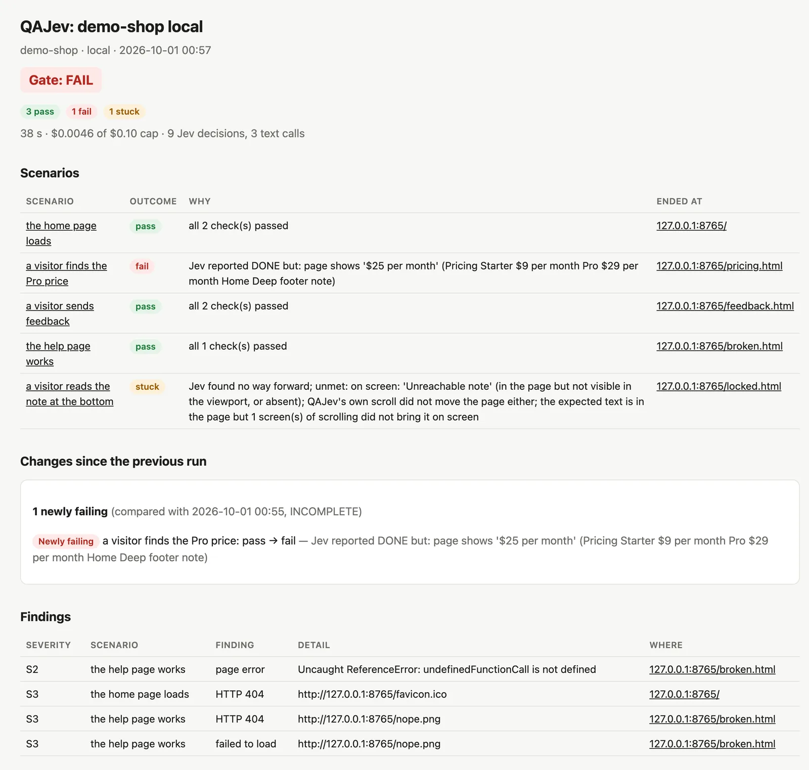
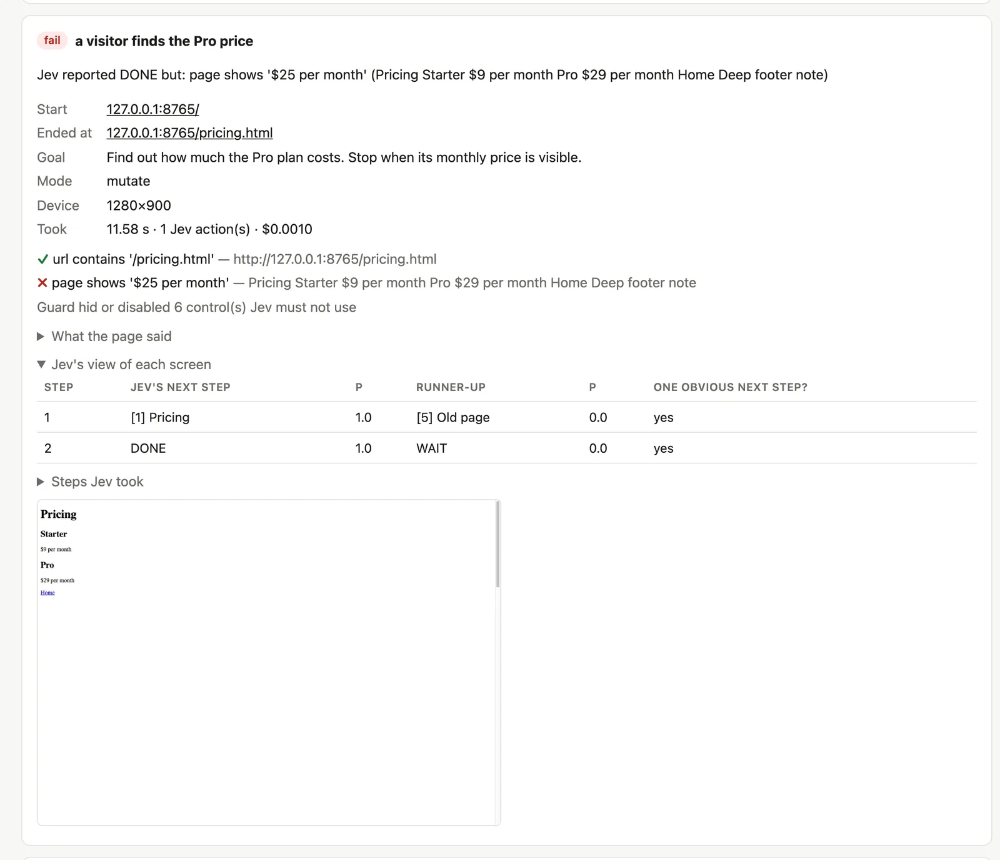
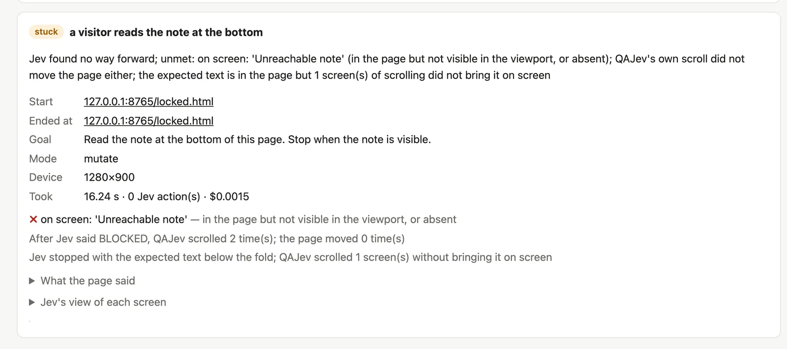
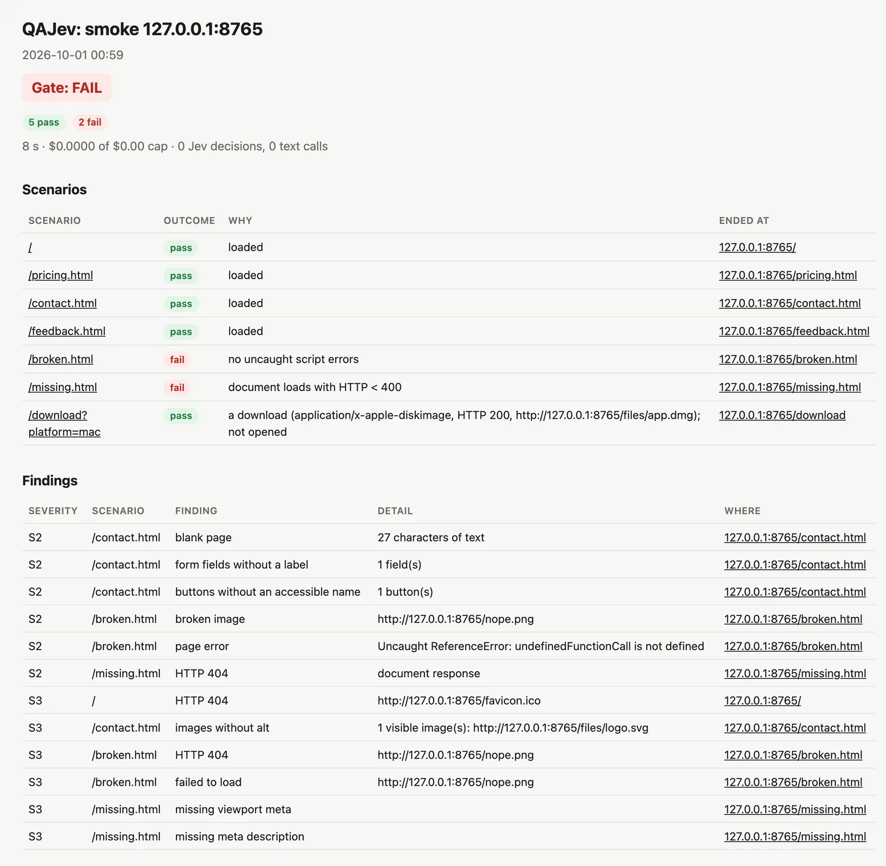
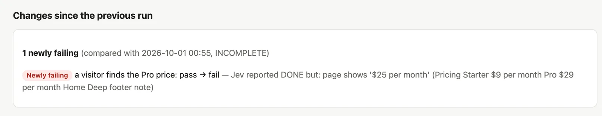
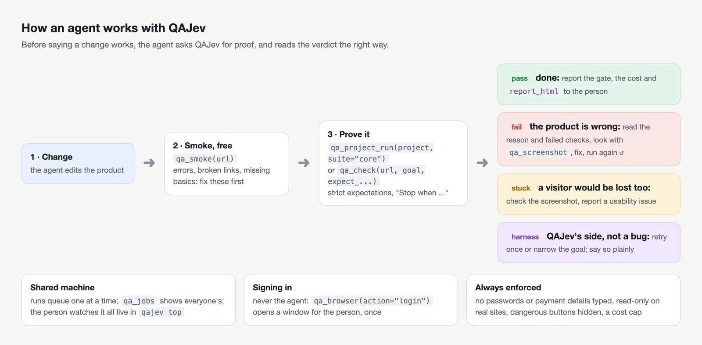
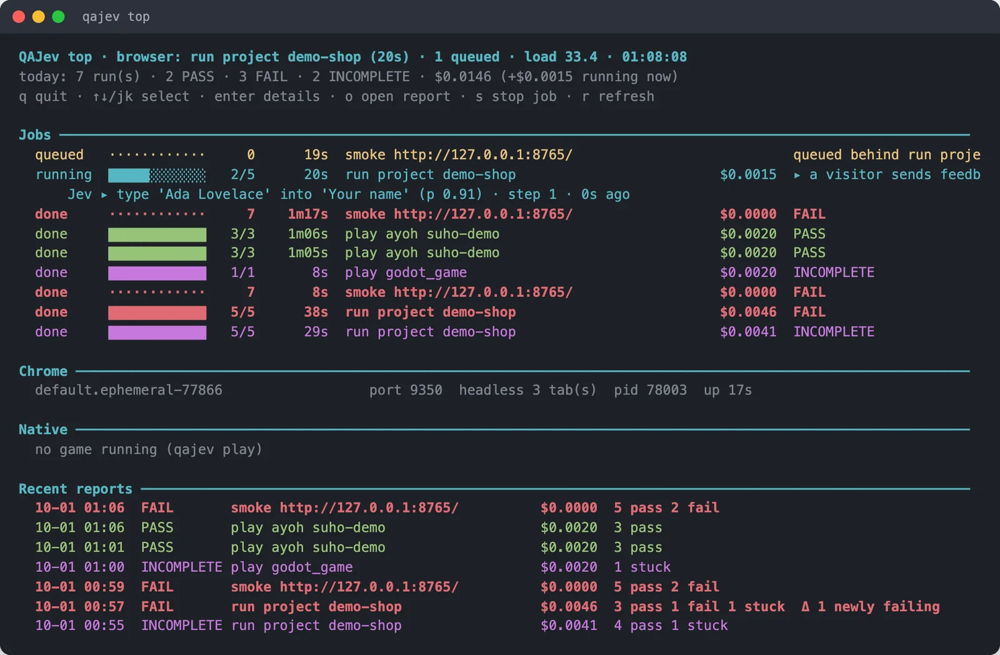
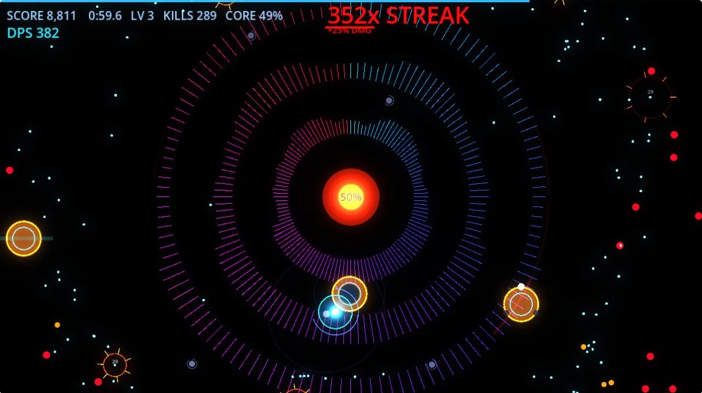

Write the goal
One goal per scenario, ending with "Stop when…", and what the page must show.
goal: Find what the Pro plan costs per month. Stop when that price is visible.
expect:
visible: ["$29 per month"]
url: /pricing
Describe what a person should be able to do, in plain English. Jev, a small and fast model, tries it: in a real Chrome on desktop and on a phone, in your Godot or Electron game, or in your app on the iOS Simulator or an Android emulator. QAJev then checks the result against what you expected, so a pass means it really happened.
$ uv tool install git+https://github.com/hanamorilabs/qajev
AI agent? Setup and usage in plain text: qajev.com/llms.txt
Example: one goal, "Find what the Pro plan costs per month. Stop when that price is visible.", expecting "$29 per month" on screen. On desktop, Jev clicks Pricing and the price is on screen. On the phone, Jev opens the menu, taps Pricing and the price is on screen. Both pass, and the gate is PASS.
Each of Jev's moves takes about a quarter of a second. The result comes from checking the page.
--real-devices and the same tests also run in Chrome on an Android emulator. Safari on the iOS Simulator isn't supported yet.
You don't write CSS selectors. A test says what a visitor wants to do and what the page should show at the end, so it keeps working when the layout changes.
One goal per scenario, ending with "Stop when…", and what the page must show.
Jev reads the page as text and picks one action at a time: click, type, scroll or follow a link. Each decision takes about a quarter of a second and costs a fraction of a cent. Prefer Cloudflare's open Clef models? They make the same decisions, and can also look at the screenshot: a button cut off by its box, a price drawn on a canvas.
Jev saying "done" is only a hint. Your expectations are checked against the real page, then written up in a report you can read.
Each result says whose problem it is. The example reasons below are from real reports. Every report opens with a test plan: what each test proves, in plain words, with a box ticked as it runs. A test that doesn't say what it proves can't pass the run. "On screen" means a person can see it: not hidden under an overlay, not cut short by its box.
Nothing to do. A check passes only when it holds exactly: a script check must return true, and one that returns a reason fails with that reason.
all 2 check(s) passed
A check failed or the page didn't load, even if Jev thought it had finished.
Jev reported DONE but: page shows '$25 per month'
A real visitor might get stuck here too, so it's worth a look.
the expected text is in the page but 1 screen(s) of scrolling did not bring it on screen
A time or cost limit ran out, or the page never stopped changing. This isn't counted against your site.
3 of Jev's moves went stale before they ran (the page kept changing)
Each run ends with one gate, PASS, FAIL or INCOMPLETE, and an exit code your CI understands. Other problems seen along the way (script errors, failed requests, broken images) are listed separately as findings, from S1 (worst) to S3.
Each website scenario also runs in a phone view: a phone-sized screen, touch and an iPhone user agent, like your browser's device mode. A failure that only shows on the phone is a real mobile bug, and the report says so.
Some bugs only show on the device itself. Add --real-devices android and the same scenarios also run in Chrome on a read-only Android emulator QAJev starts for the run. Safari on the iOS Simulator isn't supported yet: QAJev can't read the page there, and reports that instead of a result.
qajev run shop.yaml --real-devices android qajev run --project shop --real-devices android
Every run writes a self-contained report.html (light and dark), plus Markdown and JSON for programs. Projects remember the previous run and show what changed.





QAJev is an MCP server too. Your coding agent can crawl a site, check a change the way a user would, read the report and look at the screenshots, then tell you what it found.
# one line, then give it the agent prompt
claude mcp add -s user qajev -- qajev mcp# ~/.codex/config.toml [mcp_servers.qajev] command = "qajev" args = ["mcp"]
// the client's MCP settings { "mcpServers": { "qajev": { "command": "qajev", "args": ["mcp"] } } }
15 MCP tools
Paste AGENT_PROMPT.md into your agent's instructions. It tells the agent which tool to use, how to write a good check and how to report the result. Or just tell your agent to read qajev.com/llms.txt: it covers installing, connecting and using QAJev.
Long runs return a job id at once. Any agent, or you, can see progress, what Jev is doing right now and the money spent, and stop it cleanly.
Many agents can share a laptop. Browser runs take turns and say what they're waiting for, so nobody starts a second copy by accident.
Agent runs use QAJev's own invisible Chrome with a fresh profile. Nothing pops up on your screen and nothing is left behind.

qajev top shows what's queued and running on the machine, what Jev is doing at this moment, and what each run costs, down to a hundredth of a cent.

The same kind of test works in a native app on a simulator, or in a game's menus while the game's own bot plays.
Native apps on the iOS Simulator and an Android emulator. QAJev starts the device for the run: a temporary copy of an iPhone simulator that's deleted afterwards, or an Android emulator in read-only mode.

Godot and Electron games. Jev works the menus, the game's own bot plays in real time, and QAJev watches the frame rate, memory and the game's state.
These limits don't rely on the model behaving. QAJev enforces them in the page and in its own code.
Form posts and deletes are blocked inside the page. Tests that change data only run on your own machine.
Buttons like sign out, delete, pay and billing are hidden from Jev, so it can't press them.
Secret and payment fields are disabled. Sign in once yourself, or let QAJev sign in from your Keychain or 1Password. Jev never sees the password.
Every run has one ($1 unless you say otherwise), checked before every paid call.
Pages that ask for the microphone get a fake one that only "hears" text from your test. On simulators, microphone prompts are refused.
Every download is refused. The smoke crawl checks download links without fetching the file.
QAJev runs its own Chrome with its own profiles. Your everyday browser and accounts are never touched. Watch a run live in the dashboard: view only, on your own machine.
The smoke crawl reads robots.txt and waits between pages. QAJev is not a load tester.
You need a Mac or Linux machine, Chrome, and one key for Jev from TypeSafe or OpenRouter (or a Cloudflare account, for Clef). The smoke crawl doesn't even need the key.
uv tool install git+https://github.com/hanamorilabs/qajevmkdir -p ~/.qajev && echo 'OPENROUTER_API_KEY=sk-or-...' >> ~/.qajev/.envqajev doctorqajev smoke http://localhost:3000qajev check http://localhost:3000 --goal "Open the pricing page. Stop when the prices are visible." --expect-url /pricing